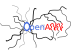
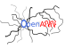

|  |
OpenANN
1.1.0
An open source library for artificial neural networks.
|


All Classes Namespaces Files Functions Variables Typedefs Enumerations Enumerator Friends Macros Pages
|  |
OpenANN
1.1.0
An open source library for artificial neural networks.
|
There are several logging mechanisms in OpenANN that are usually used for the internal logging functionality of OpenANN.
However, you can also use these mechanisms for your own programs. All classes and functions that are related to logging are located in the header OpenANN/io/Logger.h. We can distinuish two logging approaches in OpenANN: the global logger and local logger objects.
You can use the global logger with macros:
These will only output if the current log level is active. You can control the log level by setting the macro OPENANN_LOGLEVEL during compilation to one of
Note that once you disabled a log level during compilation you cannot turn it on again. However, you can turn log levels off during runtime with
or one of these functions
You can also change the logging target to any std::ostream at runtime with
To log something you just have to use the stream operator <<:
The output will have the form
<LEVEL> <DATE> <MSG>
You can set a namespace for each implementation file by setting the macro OPENANN_LOG_NAMESPACE, e.g.
so that the logger will output
<LEVEL> <DATE> <NAMESPACE>: <MSG>
An example is the output of the Optimizer LMA:
DEBUG 2013-05-26 13:33:44 LMA: Iteration #49, training error = 3.0143
This logger is based on the following article: Logging in C++.
You can also log information on a local level, i.e. you can specify different targets for different logger objects. You can do this by creating an instance of Logger:
There is no special formatting like in the global logger. The contant will be passed directly to the encapsulated output stream. This is very useful when you want to log e.g. parameters of a model and restore them afterwards.
Each logger requires a Logger::Target. The output can be redirected to stdout, to a new file or it can be appended to a file. If the target is OpenANN::Logger::APPEND_FILE, the name of the logger will be used to determine the logfile. For example, the logfile "name.log" will be used for a logger that has the name "name". If the target was OpenANN::Logger::FILE, the corresponding logfile would be "name-time.log" where time is the current time.
The output of all Logger objects can be deactivated:
Both loggers allow to specify the format for floating point numbers by passing a FloatingPointFormatter:
This will print "5.00".
 1.8.4
1.8.4